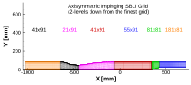
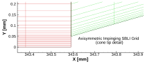

|
Turbulence Modeling Resource |
Return to: Axisymmetric Shock Boundary-Layer Interaction - Intro Page
Return to: Turbulence Modeling Resource Home Page
A series of 4 nested grids are provided.
The larger grid files have been gzipped.
Each coarser grid is exactly every-other-point
of the next finer grid, ranging from the finest grid with 6,072 cells
to the coarsest grid with 759 cells.
The following figure shows a portion of the coarse grid grid (2 levels down from the finest grid).
  Note: be sure to use double precision when reading the grids!
All grid files below can be downloaded together in one zip file:
aisbli-2d-grids.zip, aisbli-3d-grids.zip
The structured PLOT3D grids are given in two different ways, as 2-D grids (x-y plane) or as 3-D
axisymmetric grids (two planes rotated through 1 deg from each other; one plane rotated 1 deg
from the x-z plane).
You may use whichever is more convenient for your particular
application. If you get the 2-D grid version, then you must create an axisymmetric grid from
it on your own.
Format for the structured 2D grids is PLOT3D-type, formatted, MG, 2D (nbl=1) - note that you
must use double precision when reading! :
PLOT3D Files
Structured 2D grids
read(2,*) nbl
read(2,*) (idim(n),jdim(n),n=1,nbl)
do n=1,nbl
read(2,*) ((x(i,j,n),i=1,idim(n)),j=1,jdim(n)),
+ ((y(i,j,n),i=1,idim(n)),j=1,jdim(n))
enddo
Download the 2-D version of the grids in PLOT3D format here:
Format for the rotated-plane structured 3D grids is PLOT3D-type, formatted, MG, 3D (nbl=1, and idim in this case is 2) - note that you must use double precision when reading! :
read(2,*) nbl
read(2,*) (idim(n),jdim(n),kdim(n),n=1,nbl)
do n=1,nbl
read(2,*) ((x(i,j,k,n),i=1,idim(n)),j=1,jdim(n),k=1,kdim(n)),
+ ((y(i,j,k,n),i=1,idim(n)),j=1,jdim(n),k=1,kdim(n)),
+ ((z(i,j,k,n),i=1,idim(n)),j=1,jdim(n),k=1,kdim(n)),
enddo
Download the 3-D version of the grids in PLOT3D format here:
Return to: Axisymmetric Impinging Shock Boundary-Layer Interaction Validation - Intro Page
Return to: Turbulence Modeling Resource Home Page
Page Curators:
Clark Pederson,
Prahladh Iyer,
Ethan Vogel
Last Updated: 07/30/2026